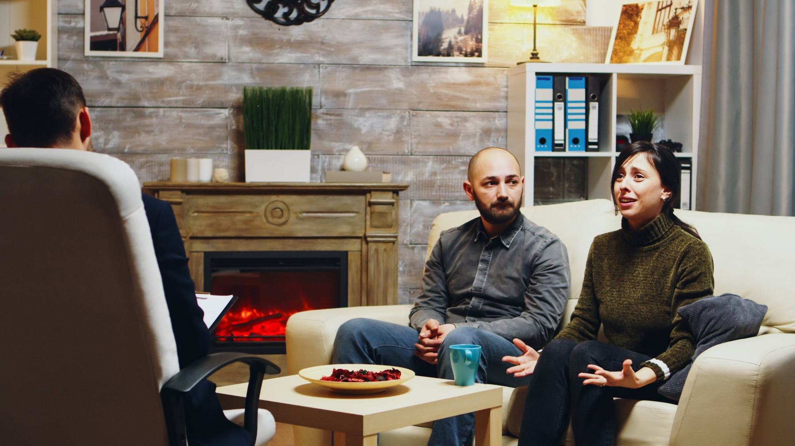

Care that fits the person
Four areas of focus, each beginning with a comprehensive evaluation and a plan shaped around your strengths.
Adolescent
Untreated anxiety, inattention, hyperactivity and impulsivity can affect a teen’s academic, social and emotional life. A comprehensive diagnostic evaluation and a client-centered, family-driven, strength-based approach help build resilience.
Adult
Adulthood brings exciting transitions and real stress. Anxiety, depression, inattention and mood instability can intensify when support systems change. Appropriate treatment eases symptoms and supports recovery and resilience.

Coaching
Practical, supportive coaching for families and individuals.
Collaborative Caregiver Coaching
Practical tools and strategies for parents and caretakers of individuals with high-functioning autism or ADHD.
Life & Social Skills Coaching
Community-based coaching for individuals with high-functioning autism or social anxiety to build confidence and practice skills.
Autism Spectrum Disorder
A specialty of the practice: evaluation that sees what others miss.
Learn moreNot sure where to start?
Tell us what is happening and we will point you in the right direction.